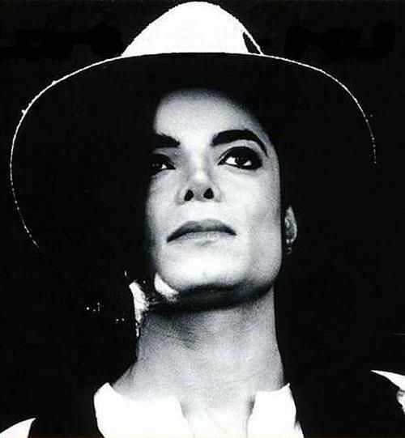
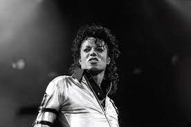
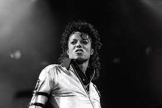

Michael Jackson
O Rei do Pop
1958 - 2009
Michael Joseph Jackson (Gary, 29 de agosto de 1958 – Los Angeles, 25 de junho de 2009) foi um cantor, compositor e dançarino estadunidense. Apelidado de "Rei do Pop", foi um dos ícones culturais mais importantes e influentes de todos os tempos e um dos maiores artistas da história da música. Suas contribuições para a música, a dança e a moda por mais de quatro décadas, juntamente com a divulgação de sua vida pessoal, fizeram dele uma figura global na cultura popular. O oitavo filho da família Jackson, Michael fez sua estreia profissional em 1964, com seus irmãos mais velhos, Jackie, Tito, Jermaine e Marlon, como membro do grupo musical The Jackson 5. Ele iniciou sua carreira solo em 1971, na Motown Records, e subiu para estrelato solo com Off the Wall (1979), que foi aclamado pela crítica. No início dos anos 1980, Michael se tornou uma figura dominante na música popular. Seus vídeos musicais, incluindo os de Beat It, Billie Jean e Thriller de seu álbum Thriller de 1982, são creditados por quebrar barreiras raciais e transformar o meio em uma forma de arte e ferramenta promocional. Sua popularidade ajudou a trazer o canal de televisão MTV à fama. Bad (1987) foi o primeiro álbum a produzir cinco singles número um da Billboard Hot 100. Jackson continuou a inovar ao longo dos anos 1990, com vídeos como Black or White e Scream, e conquistou uma reputação como artista em turnê. Através de performances de palco e vídeo, Jackson popularizou técnicas de dança complicadas, como o moonwalk, ao qual deu o nome. Seu som e estilo influenciaram artistas de vários gêneros.
 
